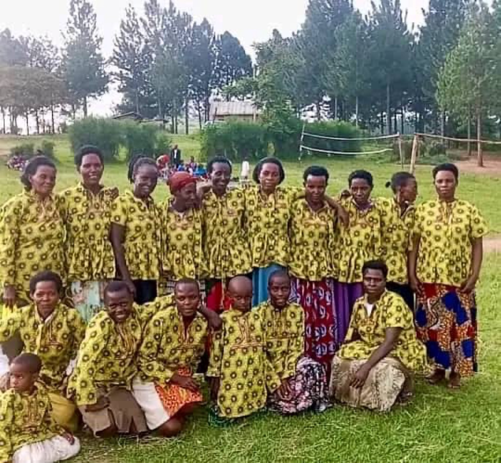
Community group
Women and children of the Ishasha community gathered together.
From the community
Moments from daily life, skills training, agriculture, education support, water advocacy, and the work of our international ambassador Dr. Daria Mejnartowicz.

Women and children of the Ishasha community gathered together.

Skills building and agricultural mentorship on the ground.
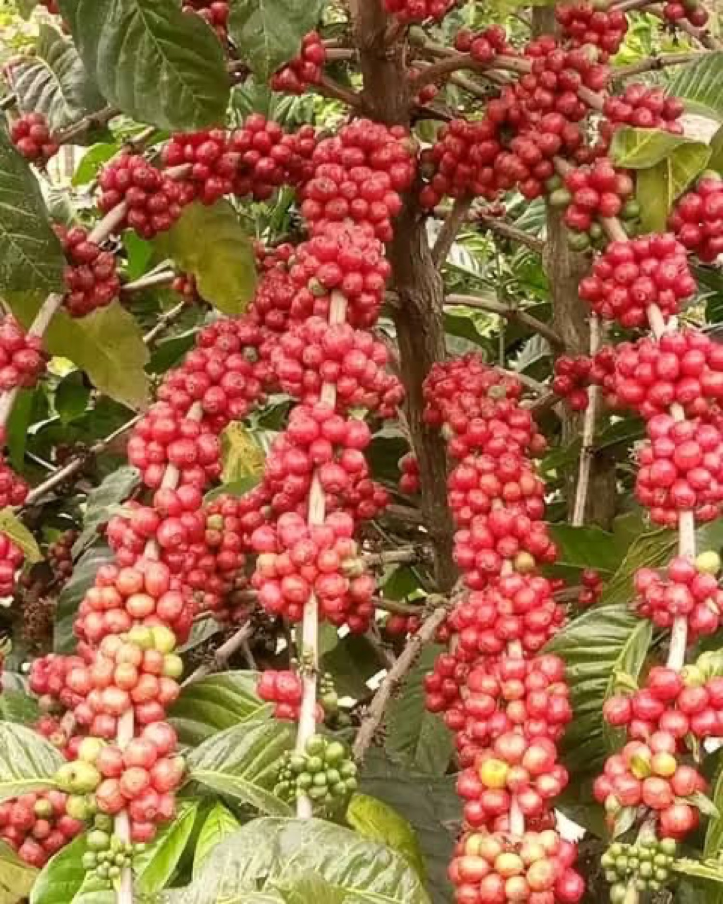
Agriculture remains a key pathway to income and self-reliance.
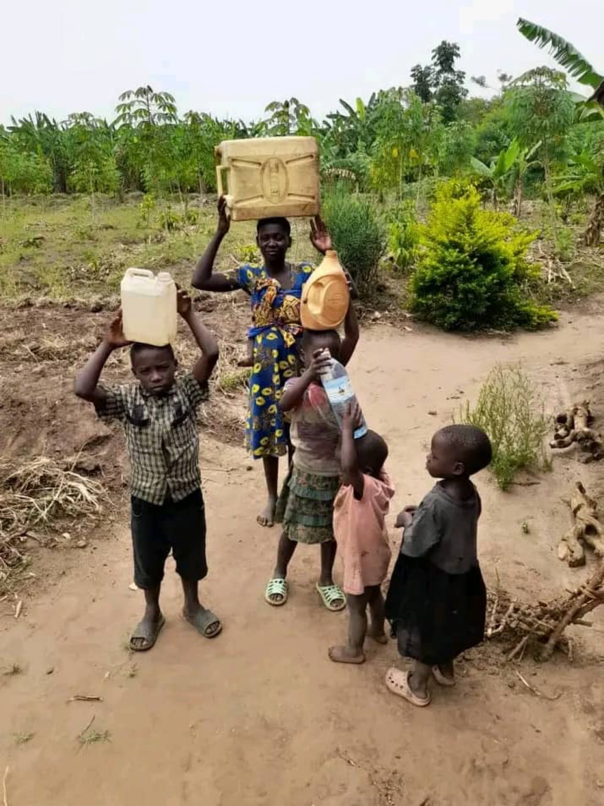
Safe water remains an urgent community priority.
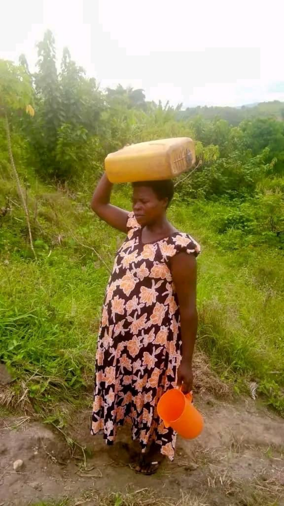
Women often shoulder the daily task of water collection.
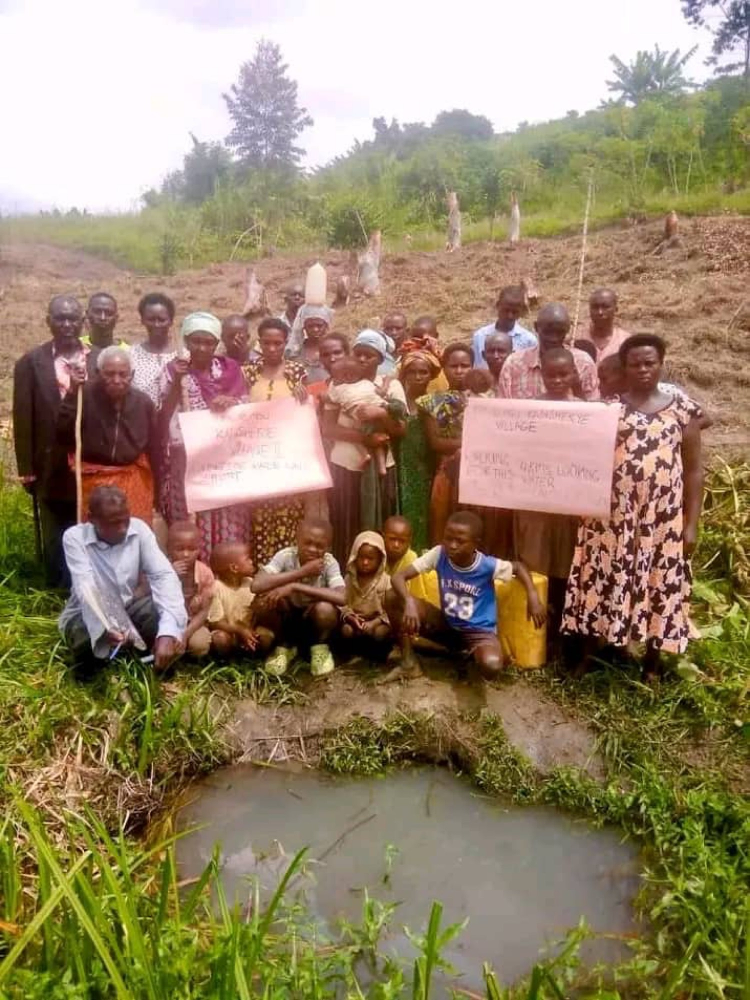
Residents advocating for clean and reliable water.

Supporting vulnerable children, especially girls, to stay in school.
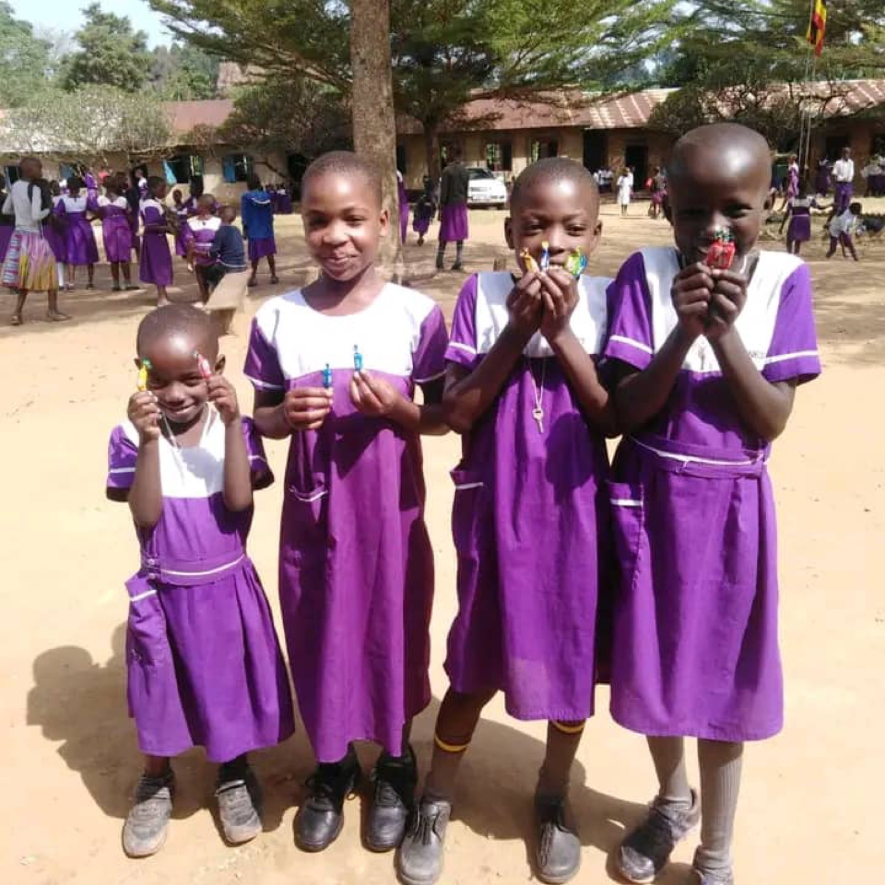
Moments of happiness for children in the community.
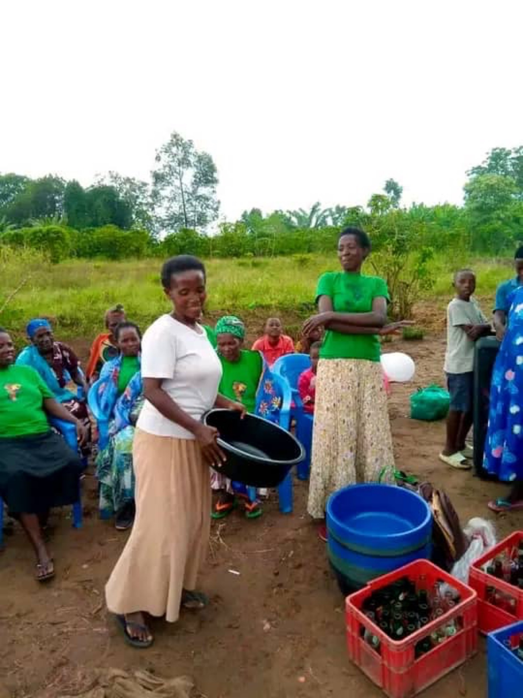
Practical support and gatherings for women and families.
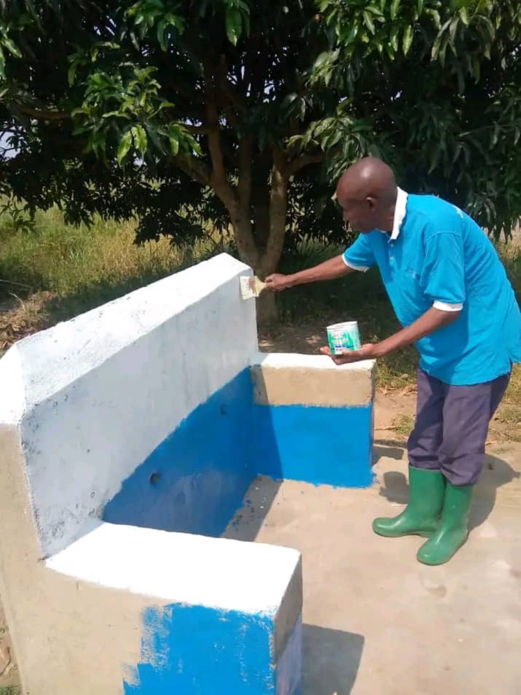
Community members improving shared facilities.
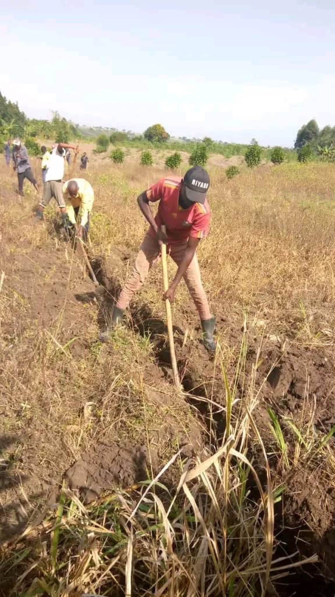
Hard work on the land for food security and livelihoods.
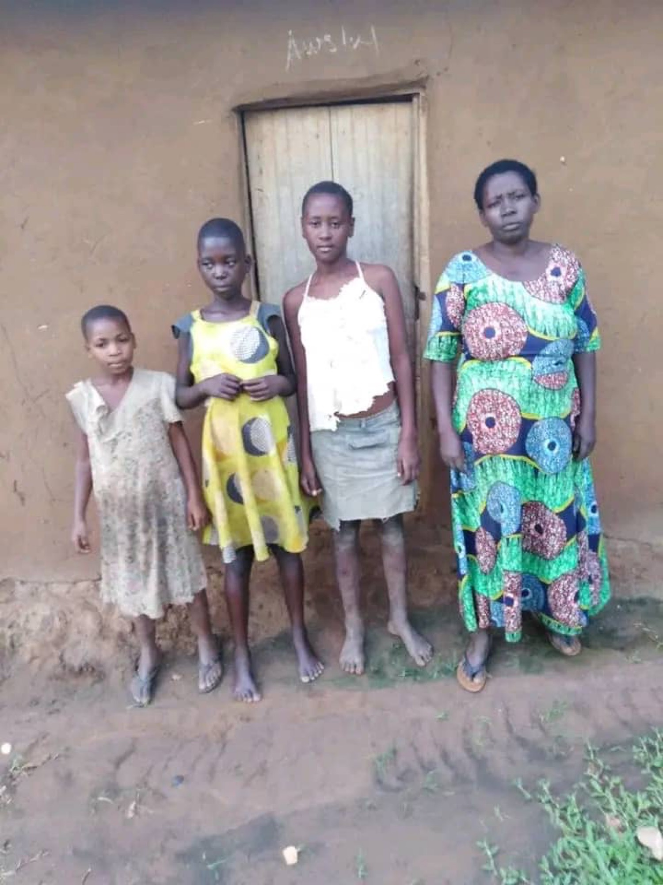
Daily life for many households we support.
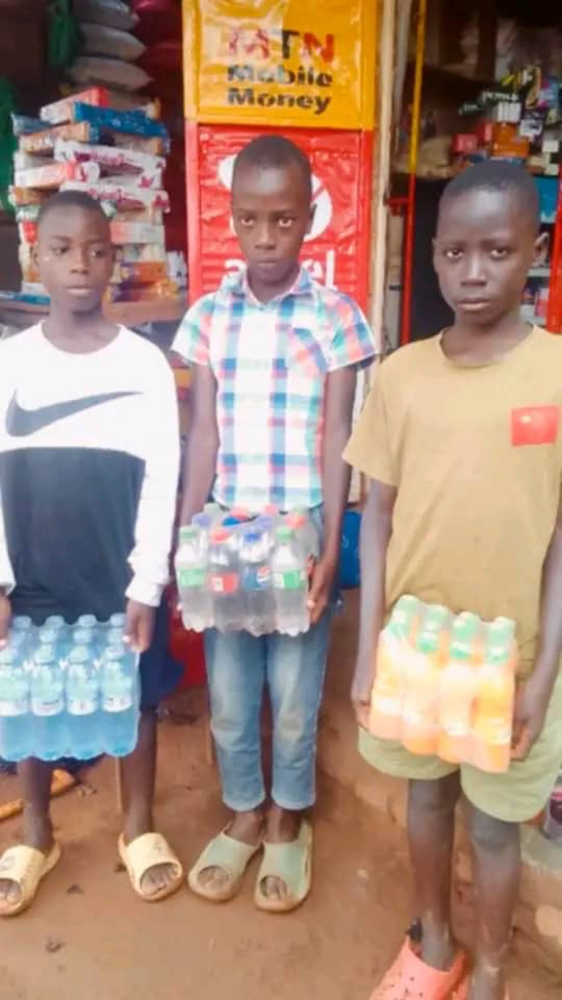
Small business activity in the community.
Our Patron & International Ambassador recognised in Poland.
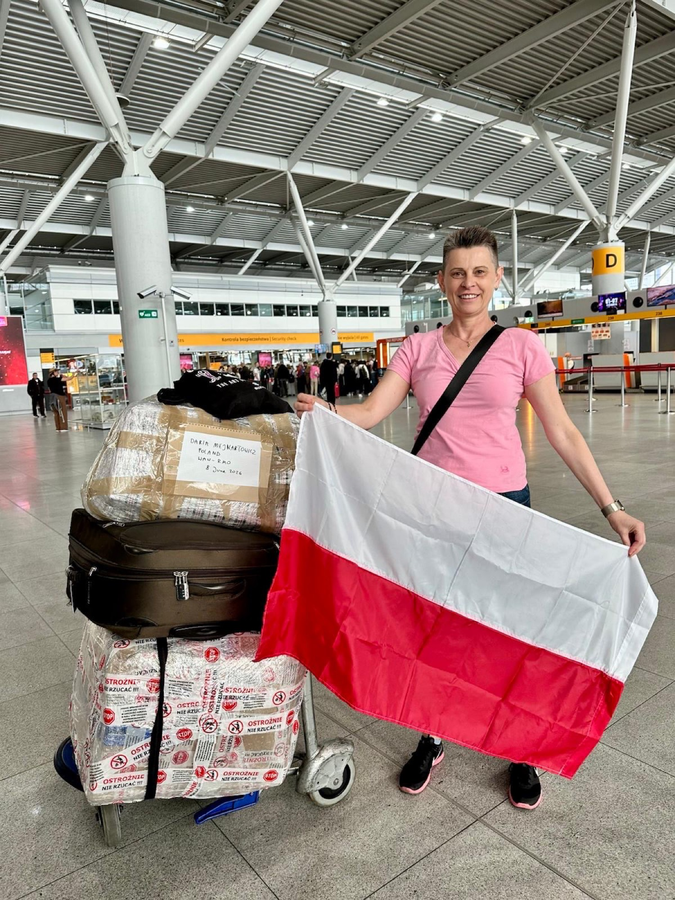
Dr. Daria on the way with supplies for Ishasha.
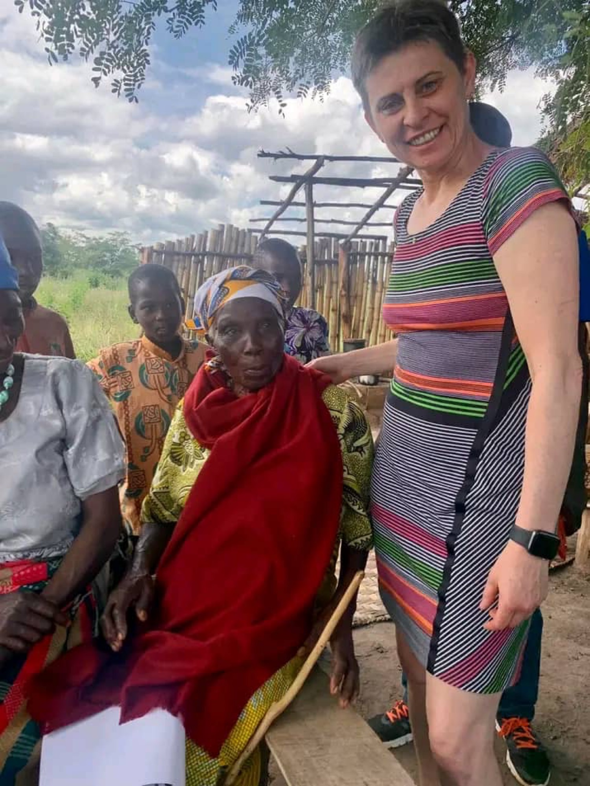
Building relationships and listening to local needs.
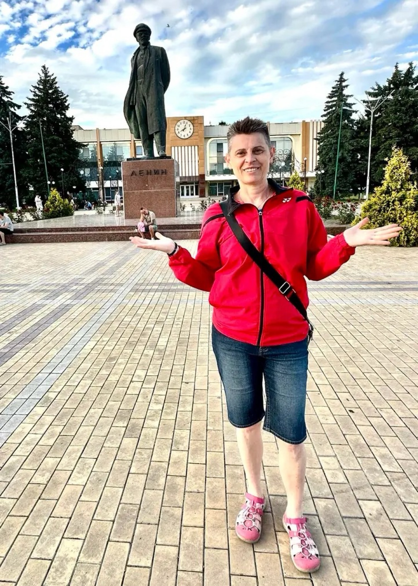
Partnership and awareness work beyond Uganda.
Have photos from the community, projects or visits? Upload them here. You can add a short description. Images are stored securely on Cloudinary.
One-time setup:
1. Create a free account at cloudinary.com
2. Settings → Upload → Add upload preset → choose Unsigned
3. Edit the file js/cloudinary-config.js and put your Cloud Name and Upload Preset